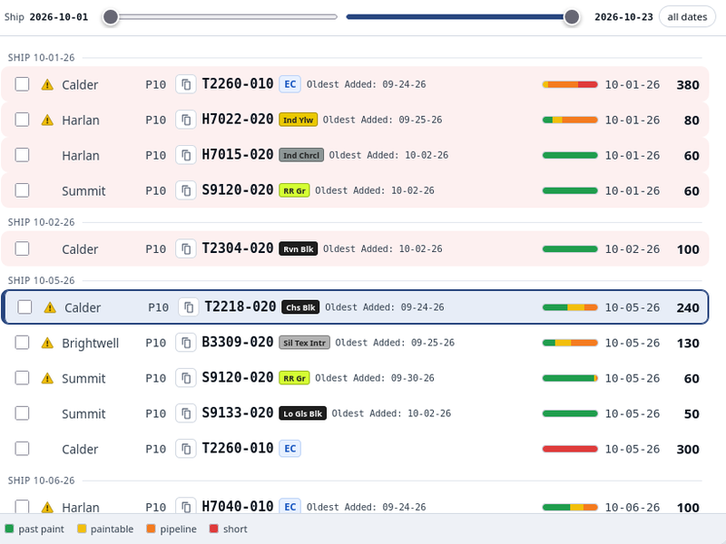
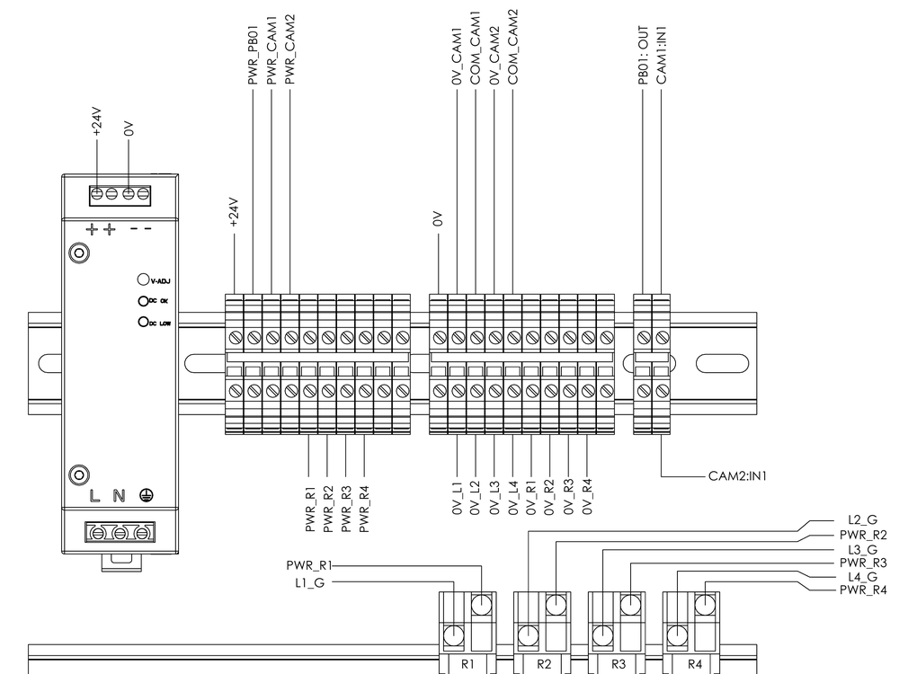
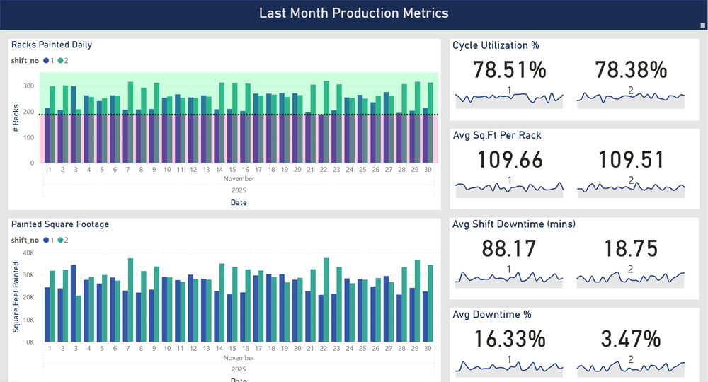
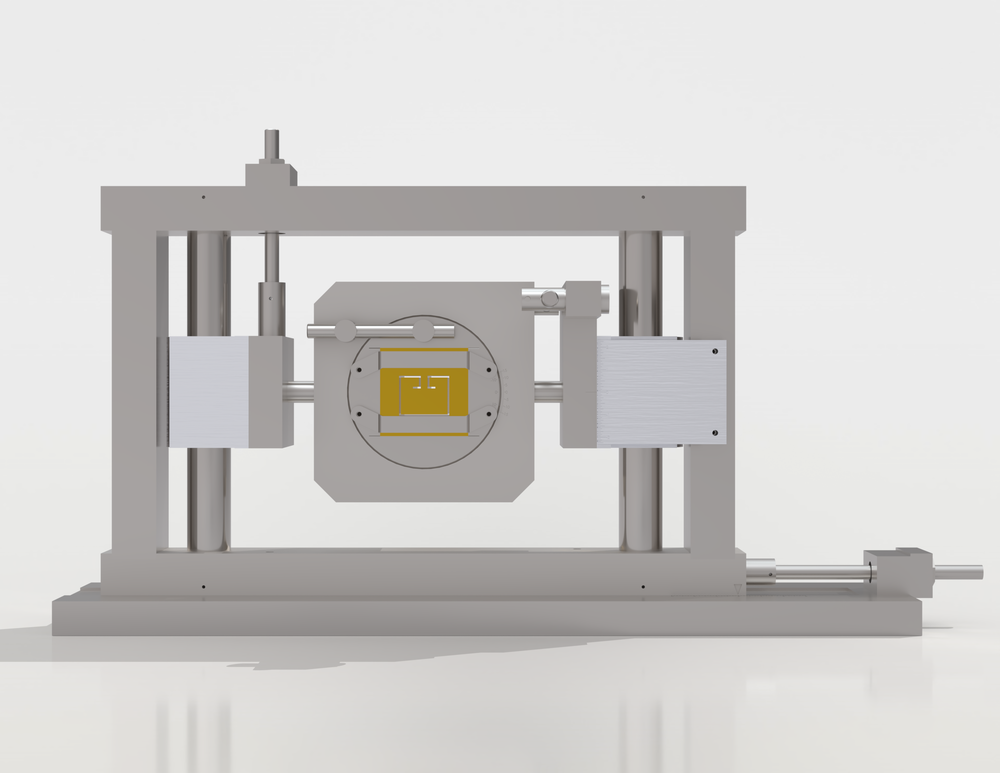
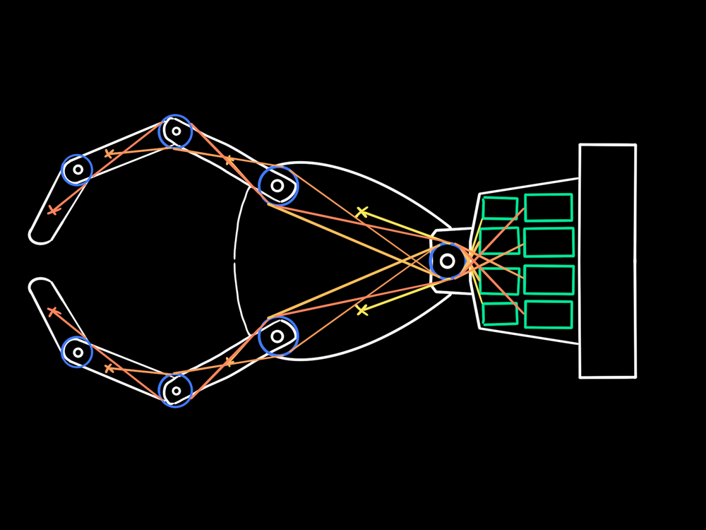

Selected work
Work
Eight projects across mechanical design, industrial controls, data capture and software. Most span more than one — the matrix on each row shows which, and the filters narrow the list.
Filter by discipline
8 entries
Paint Allocation & Floor Runlists
Models routing and BOM as one directed graph and allocates painted stock by ship-date FIFO. Planning went from 2–3+ hours to 30–45 minutes.

Automated Vision Inspection System
Multi-feature part inspection with vision, proximity and laser sensors. Fixture, control panel and relay logic designed and built solo. Cycle time 83s → 47s.
+12%Capacity
Robotic Weld Cell Consolidation
Led the consolidation of close to 40 part numbers into one robotic weld cell. +12% workflow efficiency and production capacity.
1.7s → 1.1sCycle time
E-Coat Transfer Motion Profile
Raised the max velocity and moved the e-coat rack transfer to an S-curve profile. 1.7s → 1.1s, with the jitter eliminated.

PLC Telemetry & Fault Analytics
Proof of concept on the paint line: a Raspberry Pi reading Allen-Bradley PLCs over Pycomm3, with cycle-time and fault analytics in Power BI.

Roll Form Straightener Block Holder
Four-axis adjustable holder with a readable setting on every axis, replacing overwritten paint-pen marks. Setup 1.5 h → 30 min, setup scrap 25+ parts → 5.

Tesla — Production Control Equipment
Fremont and Austin: 24+ material handling solutions through a vehicle ramp, a universal end-of-arm tool concept, and cross-vendor PLC integration.
95%Arena trials
ME 588 Autonomous Mars Rover
Team rover for autonomous navigation and object manipulation. Led electronics, sensor integration and programming; 95% success rate on foam-cube detection, pickup and placement in arena trials.
No projects match that discipline.